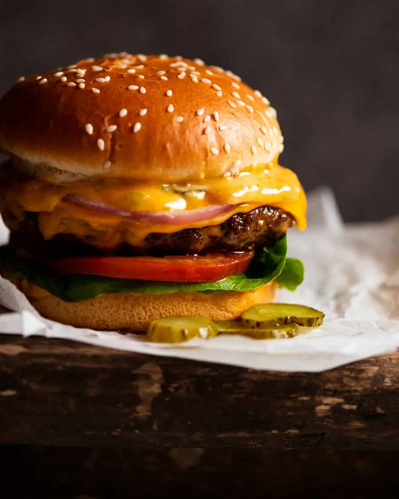

Home
Cheeseburger

Description
This cheeseburger is a relatively simple one that allows freedom of expression.
You can fill it with different salad options or different sauces that cater to your needs.
For this recipe, however, it will be barebones just so you have the right foundations
Ingredients
- 600g Beef Mince
- 1 pinch of salt and pepper per burger
- 2 tbsp canola oil
- 4 burger buns
- 4 slices of what ever cheese you like
- 8 lettuce leaves (Shredded)
- 2 large tomatos
- 1 red onion
- 2 large gherkins
- Tomato Chutney, or any other burger sauce you like
Steps
Separate the beef into 4 equal portions. Gently roll each portion into balls then press down into round patties that are slightly larger than your bun to allow for shrinkage.
Get all your burger bits and pieces out and ready to use. Don't salt your beef until just before cooking (it toughens the meat).
Preheat the grill to high. Place the bread cut face up on a tray and toast for 3 to 5 minutes until light golden. (If using BBQ, place cut face down on the grill). Set aside.
Sprinkle one side of patties with half the salt and pepper. Flip, then press a dent into the middle of each patty. (Prevents patties doming when cooking and reduces shrinkage!). Sprinkle this dented side with the remaining salt and pepper
1 tablespoon oil in a large cast iron skillet over high heat until very hot – smoking hot!
Cook 2 to 4 patties (whatever fits in the pan) for 1 1/2 minutes. Press down lightly with a spatula (not too hard else the meat juices squeeze out!). Flip, then immediately top with a slice of cheese. Cook for another 1 1/2 minutes (cheese will melt by itself!) then transfer burgers to a tray to rest for 3 minutes.
Slather the base of the bun with your sauce of choice. My order of assembly: lettuce, tomato, burger (x 2 for double!), gherkins, onion, sauce on bun lid, jam it on top of the stack.